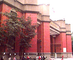

呂清夫 撰文

在這個「烤」季之中，據說國建會的議題之一是，加強中小學藝術教育。但是中學生六年寒窗為著應考，已經焦頭爛額，我不知道還有什麼餘力去加強藝術。所以國建會將來的結論，我倒願聞其詳。不過愚意以為，升學窄門如果不能拓寬，一切討論恐將流於空談。今天的中學生，包括放牛班或職校學生在內，莫不蒙有升學的陰影。至於中學的老師，也莫不將重點放在升學上面。因之，師生之間，都有一個升學的情結，從而形成了上課的失常，雖然教育局三令五申，嚴禁補習或分班，然而形勢比人強，不是學校不願遵守，實在是心有餘而力不足。日前有位教育官員指出，日本的中學不會給學生補習，要補習的學生都去找補習班，因之上課可以正常化，並說台灣應朝這個方向走。至於碰到大家指責升學主義的惡形惡狀時，也會有人指出，人家日本的升學競爭還不是非常激烈，我們有什麼好人驚小怪的？其實，這些說法並不完全了解日本。日本大學之多，似乎是我們難以想像的，一個日本中學生只要他不挑剔，任何人包括放牛班都可以上大學。而有些大學，乃至高中甚至招不到學生，東京一家名氣不差的私立大學因為招不到學生，所以台灣的留學生趨之若騖，於是構成一種特殊的景觀，那就是只有台上是日本人，台下幾乎全是台灣人﹗那麼他們為什麼還有升學競爭呢？他們之所以競爭，只是為了進入著名大學的招牌科系而已，著名大學是他們真正的窄門，因為這些大學是他們將來從政的登龍門，只要出身名校，即使沒有一個「好爸爸」，也可以平步青雲，這所以大家會擠破頭。但是大家未必都要從政，所以即使不擠這個窄門，天地仍寬。這所以學校不需要補習，上課可以正常化，藝術教育不加強也會強！但是台灣則不然，大家有志一同，都去擠同一窄門，加上僑生、邊疆生的湊熱鬧，窄門更窄，你說大家還有心情去陶冶性情嗎？等到好不容易擠進窄門以後，由於人類天生的求美、求知細胞已經不知哪裡去了，所以一有閒暇，即想逸樂，這似乎是長期壓抑過後的一種放縱，於是大學社團多半以逸樂取向，康樂性的社團永遠人數最多。更有甚者，大學附近書店奇少，師大附近不過只有三、四家，台大周邊恐怕也不到十家，這從二十年前到現在，都是如此。倒是餐廳奇多，而且莫不生意興隆，車水馬龍，不像書店那樣冷冷清清、搖搖欲墜。所以，誰若找不到理想的餐廳吃飯，那麼到大學附近走一趟，必能任君選擇，找到包君滿意的餐廳。據我籠統的估計，餐廳與書店的比例在台大附近，應該有三比一，至於師大一帶，則為十比一，真是漪歟盛哉。若是再與日本相比，那麼對比更大。像早稻田大學，從校門口到車站之間雖然長達兩公里，但是兩公里中卻綿延不斷地佈滿了書店！比台北重慶南路還要盛況空前，至於餐廳則百不得其一。因之，我們的中學教育如果只在訓練「應考部隊」，那麼大專教育可能也不會有什麼長進，如果再以這種大專畢業生去教書，那會造成怎麼樣的惡性循環呢？值得大家多去玩味。大家從小都沒有養成習慣去求美、求知，長大以後除了逸樂之外，便只有唯名利是圖了。一個朋友告訴我，他的小孩每天上小學都可以知道股票的行情。何以見得呢？這因為如果看到老師拿著棍子而臉臭臭的，便是股票跌了，反之如果看到老師笑咪咪的進教室，便是股票漲了。這難怪教育官員要到號子去查堂。升學的窄門壓死了求美、求知的心靈，社會風氣焉有不奢靡者。我不知道，我們為什麼不能多設幾間大學，全國莘莘學子沒有一個不想上大學，這種供需失衡是合乎民意的嗎？大家學歷提高，連計程車司機都是大學畢業有什麼不好呢？日本大學可以供過於求，我們為何不能？